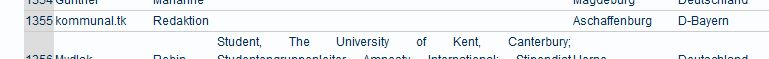

Die Diskussion um die Blockupy-Aktionen in Frankfurt in der letzten Woche geht voran. Allerdings dürfen sich gerne noch ein paar Menschen mehr daran beteiligen. Denn hier ist sie gefragt: Eure Meinung!
Archiv für Mai 2012
zugesandter Terminhinweis
Christy Schwundeck ist nun schon seit einem Jahr tot und immer noch wissen wir nicht, wie es zu ihrer Tötung kam. Trotzdem wurde nun das Ermittlungsverfahren gegen die schießende Polizistin eingestellt! Sollen wir also wieder akzeptieren, dass der Tod einer Schwarzen Person nicht aufgeklärt wird? Dürfen Polizisten in diesem Land einfach Menschen töten ohne dafür zur Verantwortung gezogen zu werden? Wir trauern um Christy, sind aber auch wütend und werden am 2.Juni für die Wiederaufnahme der Ermittlungen demonstrieren! Wir fordern euch alle auf, mit uns für Gerechtigkeit und Aufklärung auf die Straße zu gehen! Für Christy Schwundeck und alle die anderen Opfer rassistischer Polizeigewalt! 2.Juni, 13°° Hauptbahnhof
Der Blog FloraFauna hat das neue Mini-Album der KBF Revolte besprochen, was wir nicht vorenthalten wollen. Allerdings ist es sehr mißverständlich, den Beitrag bei kommunal als „lokale Pressemitteilung“ zu bezeichnen, wie bei FloraFauna geschehen. Tatsächlich sind wir weder Presse, noch war dies aufgrund einer Presse-Mittelung der Band geschrieben worden. Sowas machen wir ganz von uns aus.
Ein Beitrag zur Diskussion von Martin Bayer
Mitglieder der Redaktion und des Umfeldes von kommunal hatten sich an den Blockupy-Aktionstagen in Frankfurt vom 16. bis 19. Mai 2012 direkt beteiligt oder konnten diese – aus persönlichen wie gesundheitlichen Gründen – nur aus der Ferne beobachten, via öffentlich-rechtlicher und privater Medien, alternativer Berichterstattung im Internet und Unterhaltung mit Beteiligten. Diese erste Einschätzung soll ausdrücklich zur Diskussion einladen und erhebt noch keinen Anspruch auf eine umfassende Bewertung. Es sind acht Thesen eines aufmerksamen Beobachters, der nicht in Frankfurt sein konnte.
(mehr…)
Miltenberg – zu alt für die Jugend! Oder stimmt doch der an sich absolut überhebliche Slogan „jung und lebendig“, der anläßlich 775 Jahre Miltenberg ausgegeben wurde?
Manchmal ist die Kreisstadt wirklich lebendig. Und jung. Aber dann ist es den Stadtoberen auch nicht recht. In Erinnerung an die Aktion „Miltenberg geht baden! – Sonnen für ein autonomes Zentrum“:
Mitteilung der Roten Hilfe OG Aschaffenburg
Die Frankfurter Polizei verschickt aktuell Verfügungen an Menschen aus Frankfurt und anderen Städten und erteilt ihnen vom 16. – 20. Mai – also für den Zeitraum der Blockupy-Aktionstage – Aufenthaltsverbote für die Frankfurter Innenstadt. Der Roten Hilfe Aschaffenburg ist bekannt, dass auch einige AktivistInnen vom bayerischen Untermain von diesen Maßnahmen betroffen sind.
(mehr…)
zugesandter Terminhinweis
Die Posaunen von Jericho haben ganze Arbeit geleistet.
Wir trommeln mit großer Ausdauer friedlich mit Herz.
- Blockupy-Demo erlaubt – für das Grundrecht auf Versammlungsfreiheit –
- gegen die unsoziale Krisenpolitik in Europa – Banken in die Schranken –
Internationale Großdemo in Bankfurt
Samstag 19. Mai – Beginn 12 Uhr
Wir fahren mit dem Sammelfahrschein der DB – Treffpunkt 10.15 Uhr am Hauptbahnhof – die Fahrtkosten übernimmt ATTAC A’burg
(mehr…)
„Tschüszy machts gut…“ – diesen etwas launigen Titel hat das neue Album der KBF REVOLTE. Und wie immer kann es kostenfrei heruntergeladen werden. Mit dabei auch ein Cover zum Selbstausdrucken.
(mehr…)
Für den 12. Mai 2012 um 5 vor 12 riefen Attac, Kommunale Initiative (KI) und Friedenstrommler zu einer kleinen Aktion vor der Deutschen Bank in Aschaffenburg auf. Die Rede von Reinhard Frankl – die wir hier verlinkt haben (PDF) - gipfelte in den Forderungen: „Schluss mit den „Rettungsschirmen“ fürZocker, Banken und Konzerne! Weg mit dem unsäglichen Fiskalpakt! Stoppt den Sozialkahlschlag – hier und in ganz Europa! Die Verursacher sollen zahlen für IHRE Krise! Hoch die internationale Solidarität! Auf nach Frankfurt am nächsten Samstag!“
Die Redaktion kommunal hat sich bereits gegen das Verbot der Blockupy-Aktionen gewandt. Es wurde aber noch schlimmer. Jetzt wurde sogar gezielt Menschen auch aus unserer Region – die Teilnahme persönlich untersagt.
zugesandter Terminhinweis
Momentaufnahmen und Betrachtungen von und mit Flüchtlingen und Asylsuchenden
Montag, 14. Mai, 20 Uhr, Stadttheater Aschaffenburg
Mit der Flüchtlingstheatergruppe aus der Gemeinschaftsunterkunft für Asylbewerber Würzburg
(mehr…)
„Durch die geplante Übernahme der Rhön Klinikum AG durch die zum Fresenius Konzern gehörende Helios-Gruppe nimmt der seit Jahren zu beobachtende Konzentrierungsprozess im privatisierten Krankenhaussektor gehörig Fahrt auf. Zugleich hat die Politik durch die Schuldenbremse und die fortwährende Unterfinanzierung der kommunalen Krankenhäuser bereits die Weichen für weitere Privatisierungen gestellt.“ So schreibt Jens Berger in einem Beitrag bei den Nachenkseiten. Wichtig zu wissen: Die Krankenhäuser im Kreis Miltenberg gehören zur Rhön AG, worüber wir schon ausführlich berichteten.
Die Redaktion kommunal hat die Protestnote gegen das Verbot der Veranstaltungen des Bündnisses Blockupy Frankfurt unterzeichnet und bittet um weitere Unterzeichnerinnen und Unterzeichner.

Zur Information:
(mehr…)
zugesandter Terminhinweis
Anti-Bankentag 2012 – 5 vor 12
Treffpunkt um 11:45 am Samstag 12. Mai vor Deutscher Bank, Luitpoldstr./Ecke Steingasse in Aschaffenburg
Dauer der Aktion von 11:55 bis ca. 12:20 Uhr
(mehr…)
Nach dem Interview mit Johannes Büttner konnten wir noch ein weiteres Interview führen, das die Thematik der Jugend- und Studentenbewegung (1968 und Folgendes) behandelt. Wir werden demnächst bei den regionalen Texten eine eigene Rubrik „1968″ einrichten, da ja auch schon mehrere andere Beiträge sich mit dieser Thematik beschäftigten.
Interview mit Hs, Aschaffenburg
Kommunal: Zahlreiche so genannte K-Gruppen, sie selber bezeichneten sich eher als marxistisch-leninistisch, also als ML-Organisationen, waren am bayerischen Untermain aktiv. Als letzte besteht heute noch die MLPD, die Nachfolgerin des Kommunistischen Arbeiterbundes Deutschlands, KABD. Mit dieser Organisation konntest Du längere Erfahrungen sammeln. Wie kam es dazu? Wie kamst Du zu dieser Gruppe? (mehr…)
zugesandter Terminhinweis
Das Casino präsentiert in Zusammenarbeit mit dem Nord-Süd-Forum und den Friedenstrommlern die Vorpremiere des Films „Die Farbe des Ozeans“ am 10.Mai um 19.00 Uhr. (mehr…)
Interview mit Johannes Büttner zu den Anfängen der linken und alternativen Bewegung am bayerischen Untermain
Kommunal: Johannes Büttner, heute Stadtrat der Kommunalen Initiative in Aschaffenburg, im Laufe der letzten Jahrzehnte bei einer sicherlich nicht mehr zählbaren Anzahl von Demonstrationen, Aktionen, Kundgebungen, Initiativen dabei gewesen, irgendwie überall, wo links oder radikal-demokratisch was los war – dieser Johannes Büttner war auch schon ganz am Anfang dabei, als es los ging mit der linken Bewegung am bayerischen Untermain. Und so haben wir ihn gebeten, uns ein Interview hierzu zu geben.
Ja, wie ging es denn eigentlich los? Was stand ganz am Anfang der linken Bewegung, der Achtundsechziger am Untermain? (mehr…)
zugesandter Terminhinweis